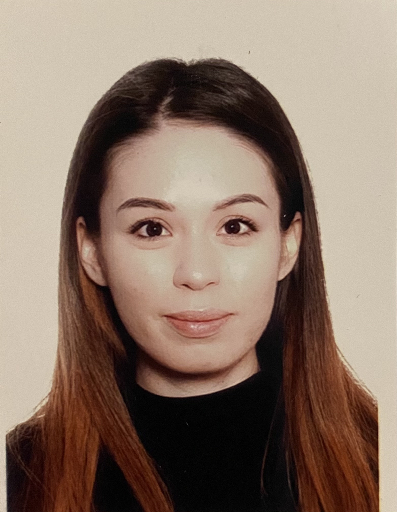

Takhmina Mollaudova
Phone: +7 777 157 31 57
What’s app:+86 18616121540
Email: m_tahmina@mail.ru
Teacher with 5+ years of experience teaching English in China on different levels. I am outgoing, responsible, confident, and ambitious individual. My passion for teaching is equally matched by my experience in it. One of my main skill is developing an affective teaching team. I am a lifelong learner. Always strike to acquiring new knowledge. Currently I am taking IT courses at RS School. Why IT? Take a look around. IT is everywhere. And every day, it changes the world. IT is our future.
Work experiences:
- Since 2017 March, Educational Center “Cheers” (currently working remotely), Shanghai, China Position: EFL Teacher
- 2021 September, Sochi Autodrom, Formula 1, Russia Position: Volunteer
- 2015 December – 2016 October Kindergarten, Ailu, Shanghai, China Position: EFL Teacher
- 2015 September – 2015 December, Kindergarten Castle, Shanghai, China Position: EFL Teacher
- 2014/2015/2016/2017 March – April, Exhibition (Sibur), Shanghai, China Position: Organizer-Translator
- 2011 March, Cisco Expo, Almaty, Kazakhstan Position: Organizer
Education:
- Since December 2021 Currently attending an IT online training session at RSschool
- 2015-2017 Shanghai University of International Business and Economics. Chinese courses. Shanghai, China
- 2014-2015 Tongji University. Chinese courses. Shanghai, China
- 2010- 2014 East China University of Political Science and Law (ECUPL).Business school;International trade and economics. (Bachelor degree) Shanghai, China
- 2010 –2014 University of international business (UIB), Economics; International relations. (bachelor degree) Almaty, Kazakhstan.
- 1999-2010 High School №114. Almaty, Kazakhstan
Key skills:
- Scheduling
- Time Management
- Effective Class Management
- Organization
- Prioritization
Computer skills:
- Microsoft Office
- Power Point
- Excel
- HTML5
- CSS
Language skills:
- Russian – native
- English – fluent
- Chinese – conversational
- Spanish - conversational
Certificate: